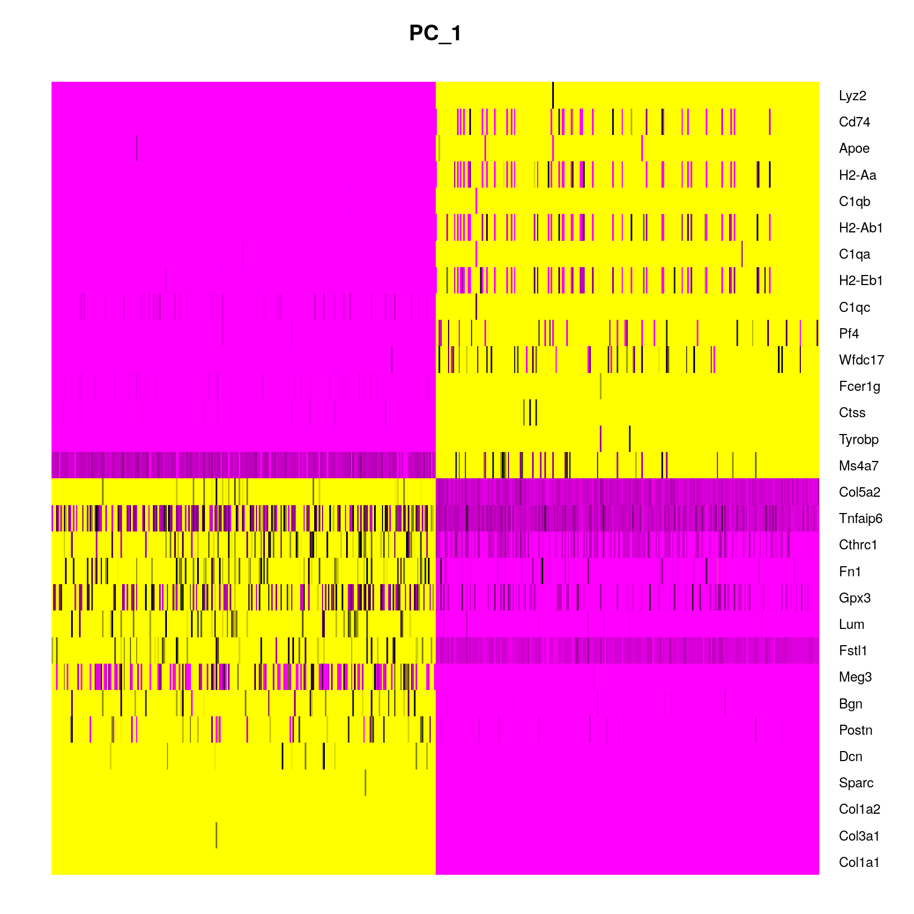
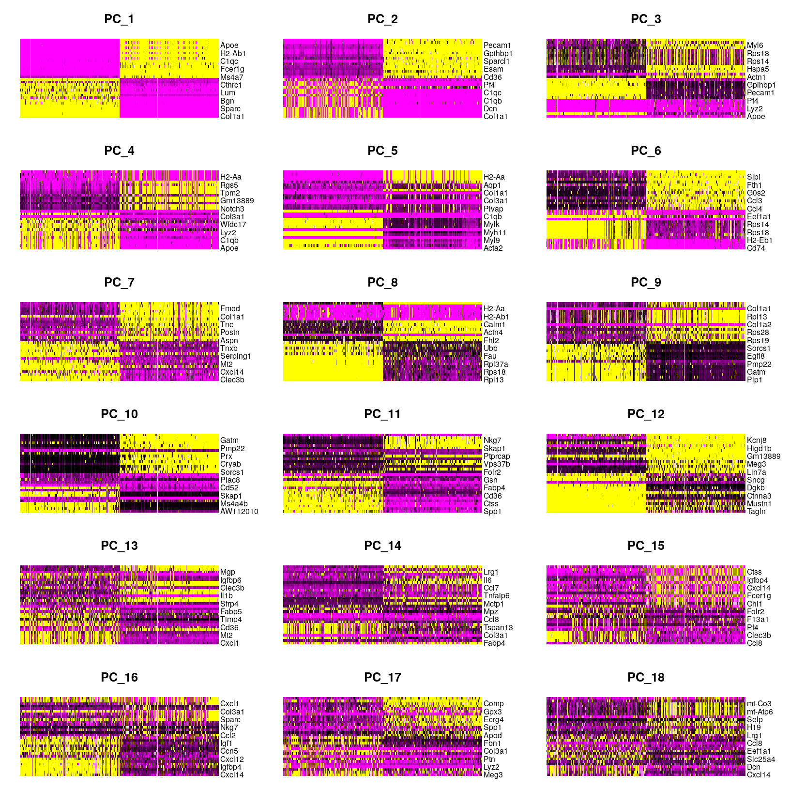

Workflow Overview

Introduction
One of our ultimate goals is to cluster the cells according to their
expression profiles, and determine what cell types correspond to these
clusters for the purposes of differential expression between clusters
and/or between conditions within clusters. However, across the 12
samples in our data set over 20,000 cells are assayed with approximately
21K genes measured per cell.
This means that even after filtering the data, we are working very
“high-dimensional” data. High dimensional data presents two challenges:
1) the scale of the data makes analysis steps costly and slow and 2)
there is likely uninteresting technical variation across our data that
we want to excludes.
In this section, we will use principal component analysis (PCA) to
reduce the dimensionality of the data by grouping correlated features
into a single dimension and excluding dimensions that are less likely to
correspond to interesting biological variance.
Similar to the previous sections, the process of selecting
informative dimensions in a dataset is often iterative and while a
single value is likely to be reported, multiple parameter choices may
have been tested.
Lesson motivations
- Understand why PCA is used to reduce high-dimensional single-cell
data prior to integration and clustering
Objectives
- Use the
RunPCA() function to generate principal
components for our data
- Choose an appropriate number of principal components to capture
variance in our data
- Use
IntegrateLayers to integrate across our data prior
to clustering
Dimensionality reduction
In addition to the “high-dimensionality” expected for single-cell
data, we expect the data to be both “sparse” and “noisy”. Sparse in the
sense that many genes will either not be expressed or not measured in
many of the cells and have zero values. Noisy due to biological
variability and the practical limitations of both capture and sequencing
depth source.
Note on zero “inflation” of single-cell data
Single-cell data is sometimes described as “zero inflated”, however
work by Svensson
has challenged that characterization and argued that the higher number
of zeros observed in scRNA-seq compared to bulk RNA-seq is more likely
due to biological variance and lower sequencing saturation than
technical artifacts. Work by Choi
et al. (2020) support that zeros in single-cell data are due to
biology but Jiang et
al. (2022) delves more into the “controversy” zero inflation,
including common approaches for handling zeros and the downstream
impacts.
For sparse, high-dimensional, biological data, we expect
many genes to have correlated expression as they would be impacted by
the same biological process and for other genes to have either low (more
noisy) or similar expression across the cell population and therefore
not likely to correspond to cell-type/subtypes.
So how do we determine what and how many genes to use before
classifying cells into clusters based on their expression?
More detail on dimensionality reduction
The Ouyang
Lab has a “gentle introduction” section of their materials that goes
into greater details on dimensionality reduction including how similar
strategies are used in deep learning models. Additionaly, the OSCA book
has a chapter
on Dimensionality reduction that has useful context.
What is PCA?
Principal component analysis (PCA) determines axes in
high-dimensional space that capture the most variation. By definition,
the PCs capture the greatest factors of heterogeneity in decreasing
order in the data set source.
In practical terms, PCA creates a reduction that is representative of
the overall data while reducing the scale and complexity. For example,
we can think of a full single-cell data set as similar to the full Lord
of the Rings trilogy - large and complex with quite a bit of detail that
might be repeated and isn’t necessary to understand the overall plot and
make running the analysis prohibitively slow. Like a Cliff notes version
or a movie pitch for the book series, the PCs capture correlated
expression and reduce the size and complexity of the data, while still
allowing the overall structure of the data - that we would expect to be
related to cell-types or plot points in the analogy - to be
represented.

PCA example
To understand how PCA works for single-cell data, we can consider a
smaller dataset measuring the expression of four genes measured in just
two cells, we could plot the expression of those four genes, with data
from one cell plotted on the x-axis and the second cell plotted on the
y-axis.

If we wanted to represent the most variation across the data, we
would draw a diagonal line between gene B and gene C - this would
represent the first principal component (PC). However, this line doesn’t
capture all the variance in this data as the genes also vary above and
below the line, so we could draw another line (at a right angle to the
first) representing the second most variation in the data - which would
represent the second principal component (PC).

We’ll skip the process of generating all possible PCs, but running
PCA on our data will result in a score for each cell for each PC and
each gene will have a weight or loading for a given PC.
Why PCA is useful for single-cell data
In contrast to bulk RNA-seq, where the majority of the variance in a
given dataset are usually explained by the first and second PC, for
single-cell data we expect that many more PCs are contributing to the
overall variance.
However, we can assume that biological processes affect multiple
genes in a coordinated way. Therefore the top PCs likely represent
biological structure rather than random technical or biological noise,
which affects each gene independently and and we can use the top several
PCs to approximate the full data set in downstream analysis (source).
This reduction in dimensionality, for example from 10,000 cells x
19,000 genes to 20 PCs, allows us to select PCs that are more likely to
correspond to biological variation related to the expected cell
types/subtypes and make the downstream clustering computationally
feasible.
More context using PCA for single-cell
data
To read more on PCA, please refer to the HBC
- Theory of PCA content, from which this section is adapted and the
original source material for that content, specifically Josh Starmer’s
StatQuest video.
For additional detail on , the OSCA chapter on Principal
components analysis includes a more descriptive overview and .
Run PCA on our dataset
Since PCA is sensitive to scale, we will run it on the SCT normalized
assay (reference).
We will name the reduction in an informative way to keep them clear for
us in the future. In this case, our data has not yet been integrated,
but it has been SCT normalized. So we will name the reduction
unintegrated.sct.pca. Note that SCTTransform()
returned a set of highly variable genes, and the RunPCA()
function will use this subset to determine the PCs and genes associated
with those PCs.
# Code block - run PCA
geo_so = RunPCA(geo_so, reduction.name = 'unintegrated.sct.pca')
geo_so
An object of class Seurat
47037 features across 29615 samples within 2 assays
Active assay: SCT (20548 features, 3000 variable features)
3 layers present: counts, data, scale.data
1 other assay present: RNA
1 dimensional reduction calculated: unintegrated.sct.pca
After running the command in the console, we should see that the
geo_so Seurat object has been updated to add “1 dimensional
reduction calculated”.
We can then visualize the first several PCs using the
DimHeatmp() function, which orders both cells and features
(genes) according to their PCA scores and allows us to see some general
patterns in the data. Here we will specify that the first 24 PCs be
included in the figure and that 500 cells are randomly subsetted for the
plot: Note - you may need to increase your plot window size to
resolve any errors regarding figure margins._
# Code block - plot cell by gene heatmaps for first several PCs (split into two plots to avoid plot margin errors)
DimHeatmap(geo_so, dims=1:12, cells=500, balanced=TRUE, reduction = 'unintegrated.sct.pca')

DimHeatmap(geo_so, dims=13:24, cells=500, balanced=TRUE, reduction = 'unintegrated.sct.pca')

# note - need to use png() because this isn't a ggplot
png(filename = 'results/figures/qc_pca_heatmap.png', width = 12, height = 40, units = 'in', res = 300)
DimHeatmap(geo_so, dims=1:24, cells=500, balanced=TRUE, reduction = 'unintegrated.sct.pca')
dev.off()
png
2
As we scroll down in this plot, we see less and less structure in our
plots indicating that no only is less variation is being represented by
larger PCs overall but also that those PCs are less likely to correspond
to variation of interest, e.g. corresponding to cell types/subtypes.
How
does Seurat use PCA scores?
Per the Ho
Lab’s materials - “To overcome the extensive technical noise in any
single feature for scRNA-seq data, Seurat clusters cells based on their
PCA scores, with each PC essentially representing a ‘metafeature’ that
combines information across a correlated feature set. The top principal
components therefore represent a robust compression of the dataset.”
Choosing the number of significant PCs for dimensionality
reduction
As we discussed above, we don’t want to use all the PCs generated for
a single cell data set but instead want to select a subset to limit the
downstream steps to variation that’s more likely to correspond to cell
types or subtypes. So how many PCs should be used?
A good starting point for determining how many PCs to select for your
single-cell analysis is to understand the “resolution” of your
biological question. Is answering your biological question dependent on
identifying rarer cell types or specific subtypes? Or are broader
cell-types more relevant?
For this dataset, we are expecting a diversity of cell types and cell
populations that mediate wound healing, but are also that are part of
the aberrant transition to bone, which might be more rare in the
population. So for this dataset, we might want to consider starting with
more PCS rather than too few PCs to start. Again, our selection at this
step might be a starting point for further iterations more than a final
decision.
Visualizing relative contributions of each PC
One way to determine how many PCs to include is by looking at an
elbow plot, which shows the percent variance explained by successive
PCs. We’ll use the ElbowPlot() function to do this,
specifying that the first 50 PCs be plotted.
# Code block - elbow plot
ElbowPlot(geo_so, ndims = 50, reduction = 'unintegrated.sct.pca')

ggsave(filename = 'results/figures/qc_sct_elbow_plot.png', width = 8, height = 8, units = 'in')
In this plot, we could arbitrarily choose a number along the x-axis
that looks like a sharp change in the variance from one PC to the next,
that is, an elbow. Of course, while that’s often the recommendation in
tutorials, the choice of where the point of the “elbow” is, is not
always obvious, and this plot is no different. We could also try to
quantify our choice.
Using a (crude) optimization to select a starting point
Instead of choosing based on the elbow plot by sight alone, we can
try to quanitfy our choice. Here we create a function to return a
minimum PCs based on two possible metrics (cumulative variation or above
a minium step size) and then we’ll apply that function to our data:
# Code block - Function to determine optimal PCs after RunPCA()
optimal_pcs = function(so, reduction) {
# quantitative check for number of PCs to include
pct = so@reductions[[reduction]]@stdev / sum(so@reductions[[reduction]]@stdev) * 100
cum = cumsum(pct)
co1 = which(cum > 90 & pct < 5)[1]
co2 = sort(which((pct[1:length(pct)-1] - pct[2:length(pct)]) > .1), decreasing = T)[1] + 1
pcs = min(co1, co2)
return(pcs)
}
# Apply function to our data
pcs = optimal_pcs(geo_so, 'unintegrated.sct.pca')
pcs
[1] 15
Again, this number is likely a starting point and may need to be
revised depending on the outcome of the downstream steps.
Other more quanitative parameter selection
options
While outside the scope of this workshop, there are community efforts
to develop more sophisticated methods to select an appropriate number of
PCs, like the chooseR
package findPC
package or using
clustering trees to evaluate the stability of parameter choices.
Visualizing our PC results
In addition to selecting a reduced number of PCs to represetn our
data, we can also visualize , similarly to how we often look at samples
for bulk RNA-seq using the DimPlot() function, with each
cell plotted along the selected PCs and colored by a selected meta-data
column:
# Code block - PCA style plot for PC1 and PC2
?DimPlot # default dims = c(1,2)
DimPlot(geo_so, reduction = 'unintegrated.sct.pca', group.by = 'orig.ident') # first label by sample

DimPlot(geo_so, reduction = 'unintegrated.sct.pca', group.by = 'day') # then label by day

ggsave(filename = 'results/figures/qc_pca_plot_unintegrated_sct_day.png', width = 7, height = 6, units = 'in') # save
In the first plot with each cell labeled by the original sample name,
it looks like there might be some batches but it’s hard to distinguish.
From the second by day, we can see that even after
normalization there seems to be variation that corresponds more to a
batch effect ralted to the day status than interesting biological
variation. This suggests that clustering our data using our selected
number of PCs, integration should be performed to mitigate these
differences and better align our data.
Integrate Layers
Based on our PCA plot and often a standard part of multiple sample
scRNA-seq analysis, we will integrate our data across all samples.
Having previously used SCTransform() to normalize our data
select variable and now generated a PCA reduction, we can now use the
IntegrateLayers() function to do that.
New to Seurat v5 are improvements that make selecting different
integration methods much easier. The results of each alternative
integration method are stored within the same Seurat
object, which makes comparing downstream effects much easier. So, if we
wanted to run the slightly faster RPCAIntegration method,
we would run (but we won’t here):
### DO NOT RUN ###
geo_so = IntegrateLayers(
object = geo_so,
method = RPCAIntegration,
orig.reduction = 'unintegrated.sct.pca',
normalization.method = 'SCT',
new.reduction = 'integrated.sct.rpca')
The Seurat v5 vignette on integrative analysis (link)
provides examples of each integration method. Note, that the vignette
code uses the NormalizeData(), ScaleData(),
FindVariableFeatures() pipeline, so their
IntegrateLayers() call does not include
normalization.method = 'SCT', as ours must.
Note we have specified the unintegrated reduction
unintegrated.sct.pca, which is what
IntegrateLayers() operates on, along with the
SCT assay. Let’s take a look to see what’s different about
the Seurat object:
Load integrated data
Because the IntegrateLayers() function takes a while to
run, we will simply load the integrated geo_so object from
a file we have previously generated.
geo_so = readRDS('/home/workshop/rcavalca/ISC_R/results/rdata/geo_so_sct_integrated.rds')
# Check our updated object that we've read in from file
geo_so
An object of class Seurat
47037 features across 29615 samples within 2 assays
Active assay: SCT (20548 features, 3000 variable features)
3 layers present: counts, data, scale.data
1 other assay present: RNA
2 dimensional reductions calculated: unintegrated.sct.pca, integrated.sct.rpca
Observe that we now have a new reduction,
integrated.sct.rpca, which we will use downstream.
We can also confirm that our integration method has helped to correct
the Day effects we saw in the initial PCA plots
DimPlot(geo_so, reduction = 'integrated.sct.rpca', group.by = 'day')
ggsave(filename = 'results/figures/qc_pca_plot_integrated_sct_day.png', width = 7, height = 6, units = 'in')
Save our progress
Before we move on, let’s save our updated Seurat object to file:
saveRDS(geo_so, file = 'results/rdata/geo_so_sct_integrated.rds')
Other integration methods
After normalizing the data with SCTransform() and
performed the dimension reduction with RunPCA(),
alternatively we could also use the CCA integration method
with:
### DO NOT RUN ###
geo_so = IntegrateLayers(
object = geo_so,
method = CCAIntegration,
orig.reduction = 'unintegrated.sct.pca',
normalization.method = 'SCT',
new.reduction = 'integrated.sct.cca')
Summary
In this section, we:
- Discussed how PCA is used in scRNA-seq analysis.
- Demonstrated some visualizations after computing PCA.
- Discussed how to decide how many PCs to use in downstream
analysis.
- Integrated the data.
Next steps: Clustering and projection
These materials have been adapted and extended from materials listed
above. These are open access materials distributed under the terms of
the Creative
Commons Attribution license (CC BY 4.0), which permits unrestricted
use, distribution, and reproduction in any medium, provided the original
author and source are credited.
